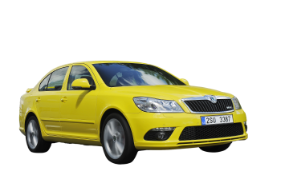

Historie modelu



Druhá generace liftbacku se představila v roce 2004 na autosalonu v Ženevě. Oproti první generaci se vůz snažící se konkurovat i vozům střední třídy liší motorizací, modernější technikou i o něco robustnější karosérií.
Design nové generace, především pak přední partie, vychází ze stylu generace první. K tomuto stylu neodmyslitelně patří mohutná přední maska chladiče, ta ale získala lichoběžníkový tvar. Nárazník více splývá s karoserií. Do vnějších zpětných zrcátek byly integrovány blikače. Přední a zadní boční skla vozu dělí široké B-sloupky. Zadní světlomety přesahují hrany zádi a zasahují do boků.
Délka vozu je 4572 mm, šířka 1769 mm a výška 1462 mm, rozvor se zvýšil na 2578 mm. Zavazadlový prostor má objem 560 l, se sklopenými zadními sedadly je to dokonce 1350 l.
Octavia se představila ve třech stupních výbavy - Classic, Ambiente a Elegance. Od počátku byly k dispozici tři základní a devět metalických barev, tři barevné koncepty interiéru a dvanáct verzí čalounění podle stupně výbavy. Mezi standardní výbavu patří například čtyři airbagy, kotoučové brzdy na všech kolech, elektromechanický posilovač řízení nebo ABS. Mezi výbavou na přání se objevují mimo jiné parkovací a dešťové senzory, ESP nebo dvouzónová klimatizace.
Mezi motory se objevily zážehové agregáty 1,4 MPI/55 kW a 1,6 MPI/75 kW, dále 1,6 FSI/85 kW a 2,0 FSI/110 kW s přímým vstřikováním paliva. Kromě zážehových motorů doplnily nabídku i dva vznětové čtyřválce 1,9 TDI-PD/77 kW a 2,0 TDI-PD/103 kW.
Od listopadu 2010 je po ukončení výroby první generace na trhu nová Octavia Tour. Jedná se o Octavii II vycházející ze základního výbavového stupně Prima s omezenou výbavou. Příď a záď mají vzhled verze vyráběné před faceliftem do roku 2008. Ostatní částí vozu (přístrojová deska, elektronika, zpětná zrcátka atd.) jsou shodné s modernizovanou verzí. Pro český trh je k dispozici pouze motorizace 1.6 MPI 75 kW, ale na jiných trzích je k mání i s 1.4 MPI 59 kW a na trzích mimo EU s 2.0 TDI-CR 81 kW.
V modelovém roce 2009, čtyři roky po představení druhé generace Škody Octavia, došlo k faceliftu. Modernizace se dotkla přední masky a světlometů, blatníků, ale také interiéru a motorizace. Přibylo turbo 1,4 TSI o výkonu 90 kW, naopak ubyl motor 1,6 FSI (85 kW) s přímým vstřikováním paliva.
Po půl roce prošly modernizací i modely Scout a RS. Verze RS se dočkala předních světlometů s xenonovými výbojkami s adaptivním svícením. Přepracované byly i nárazníky, přední pak se světly pro denní svícení z LED a výraznějším nasávacím otvorem. Vůz vybavený benzinovým motorem je o 20 kg lehčí (o 15 kg u vozů s dieselem). Octavie Scout se dotkly spíš jen kosmetické změny. Kromě designových změn společných pro všechny Octavie byly přepracovány plasty na náraznících, přibyla metalická barva Rosso Brunello a vůz dostal mlhovky s Corner funkcí umožňující nasvěcování zatáček. Rok 2010 byl ve znamení zavedení nejmenšího motoru, který Škoda v současnosti dodává do svých vozů - čtyřválec 1.2 TSI o výkonu 77 kW spojený se 6° manuální převodovkou (přesný objem 1197 cm3 je opravdu o 1 cm3 menší než tříválcové motory HTP ve Fabiích a Roomsterech!)
Motory
modelová řada Octavie - 2. generace zachycuje nástup malých benzínových turbomotorů v kombinaci s motory s větším objemem. Vnabídce byl ještě oblíbený motor 1,9TDI, který se zde loučil a byl nahrazen modernějšími 2,0 TDI případně menším 1,6TDI.
Octavie 2. generace zároveň nabízela tovární motor na LPG, případně motor, který dokázal spalovat jak benzín, tak Etanol.
Škoda Octavia II
| typ motoru |
roky výroby |
výkon |
| 1,2 TSI | 2010 - 2013 | 77KW |
| 1,4 16V | 2004 - 2006 | 55KW |
| 1,4 TSI | 2008 - 2013 | 90KW |
| 1,6 16V | 2004 - 2013 | 75KW |
| 1,6 FSI | 2004 - 2008 | 85KW |
| 1,8 TSI | 2009 - 2013 | 112KW |
| 1,8 TSI | 2007 - 2013 | 118KW |
| 2,0 FSI | 2004 - 2008 | 110KW |
| 2,0 TSI | 2005 - 2013 | 147KW |
| 1,6 TDI | 2009 - 2013 | 77KW |
| 1,9 TDI | 2004 - 2010 | 77KW |
| 2,0 TDI | 2010 - 2013 | 81KW |
| 2,0 TDI | 2004 - 2010 | 100KW |
| 2,0 TDI | 2004 - 2013 | 103KW |
| 2,0 TDI | 2006 - 2013 | 125KW |
| 1,6 LPG | 2009 - 2012 | 75KW |
| 1,6 mfuel | 2008 - 2013 | 75KW |
Škoda Octavia II Combi
| typ motoru |
roky výroby |
výkon |
| 1,2 TSI | 2010 - 2013 | 77KW |
| 1,4 16V | 2004 - 2006 | 55KW |
| 1,4 16V | 2006 - 2013 | 59KW |
| 1,4 TSI | 2008 - 2013 | 90KW |
| 1,6 16V | 2004 - 2013 | 75KW |
| 1,6 FSI | 2004 - 2008 | 85KW |
| 1,8 TSI | 2009 - 2013 | 112KW |
| 1,8 TSI | 2007 - 2013 | 118KW |
| 2,0 FSI | 2004 - 2008 | 110KW |
| 2,0 TSI | 2005 - 2013 | 147KW |
| 1,6 TDI | 2009 - 2013 | 77KW |
| 1,9 TDI | 2004 - 2010 | 77KW |
| 2,0 TDI | 2010 - 2013 | 81KW |
| 2,0 TDI | 2004 - 2010 | 100KW |
| 2,0 TDI | 2004 - 2013 | 103KW |
| 2,0 TDI | 2006 - 2013 | 125KW |
| 1,6 LPG | 2009 - 2012 | 75KW |
| 1,6 mfuel | 2008 - 2013 | 75KW |
recenze